Next: Generalised observations
Up: Levenberg-Marquardt minimisation
Previous: Levenberg-Marquardt minimisation
Contents
An important drawback of standard least-squares algorithm such as
Levenberg-Marquardt is that they assume that all observations are correct.
Various types of estimators have been successfully used to deal with
the presence of outliers in the data.
Examples are least median-of-squares, RANSAC and Hough transform estimators.
These estimators involve a radical redesign of the measurement error model.
We employ what is probably
the simplest method of ``robustifying'' the standard Gaussian error model.
The robust error model used here assumes that the errors follow a
distribution combining a narrow ``inlier'' Gaussian with a wide ``outlier''
Gaussian, as shown for a one-dimensional distribution in
Figure 5.4.
Figure 5.4:
The error model used to model outliers in the observations
incorporated in robust Levenberg-Marquardt,
a combination of a narrow inlier Gaussian with
variance 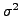, and wide Gaussian for outliers with
variance
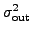. Both distributions on the
observation error 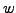 have zero mean.
| 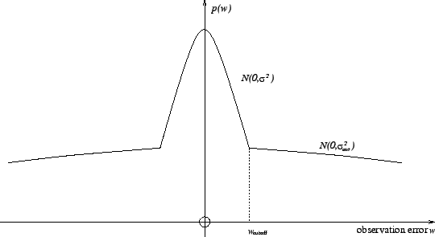 |
The distribution is a function of the observation error5.3
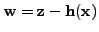.
The relative vertical scaling of the two Gaussians is chosen so that the
two distribution functions are equal at a chosen point
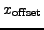.
For a general multi-dimensional observation, we have a inverse covariance
matrix 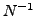 for the inlier distribution.
We restrict the outlier distribution
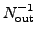 to be a rescaled version
of the inlier distribution, so that
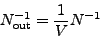
for some value 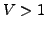. We then set choose a cutoff hypersphere in the state
space  for switching between the two distributions as a particular
value of the 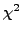. So the probability distribution function is
for switching between the two distributions as a particular
value of the 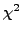. So the probability distribution function is
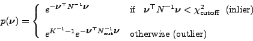
The scaling of the outlier distribution is chosen so that the two distributions
are correctly aligned at the chosen cutoff point
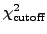.
This leads directly to the correct ``compensation'' value for the likelihood
function
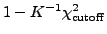, to be added to the least-squares
residual when the outlier distribution is selected during application
of a minimisation iteration.
The simple scheme used to decide switching between the
two distributions is detailed below.
Note that each Levenberg-Marquardt observation can be chosen as robust
or standard (non-robust), and potentially with a different choice for
 and
.
and
.
Next: Generalised observations
Up: Levenberg-Marquardt minimisation
Previous: Levenberg-Marquardt minimisation
Contents
Philip McLauchlan
2009-01-27